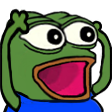

Ok let's just check the time real quick... yep we're like almost 2 months late.
Also big disclaimer I look omega goofy in all of the pictures do not make fun of me
So if you didn't know I went to the 2024 Anime Expo hosted in Los Angeles this year with my good friend Conservemomenta just to see what it was going to be like. We only went for about 1.5 days out of the total 4 days the expo was happening because it was kinda expensive and we didn't want to leave during the weekdays.
We also thought that 2 days was gonna be enough but the expo closed like half way through the second day so it kinda sucked and I missed out on a large chunk of the artist gallery (which sucked omega hard)
But yeah the two days which we did go were July 6 and July 7 (and also July 8 cuz some goofy stuff happened).
So to get into the Anime Expo we first had to get our IDs at the Crypto Arena, and we decided to take some pictures in front of the goat.
Omocat was at this expo so obviously the first thing we did as 2 omori degenerates was to b-line to the omocat store, which actually was pretty cool and nice.


They also had like a big banner where it was just omocat so we had to do some wap (worship and prayer) in front of the omocat shrine.


we love wap
After that we did some perusing through all the different stalls, and one of them was doing light novels and was trying to sell their app. So to help with that they had ipads on display that had the app which showed off how cool it was.
I managed to break out of the app and get it to play a video of Tyler1 instead .
.


btw you know he's a dad now like holy time flies bro
There was also a blue archive stall nearby so I had to take a picture of the greatest gacha game ever created


Here's a picture I got with someone dressed up as toad:

He kinda looks like dumbs
Here's a picture of a miku race car:

So after this we did some walking and we took a few pictures with differen cosplayers (the less important ones I'll just dump at the end of the blog), but here are some notable ones that I think are pretty funny:

if you know you know
Someone did a cosplay of the gnome from tiktok


bonk
Here's a picture of me with someone who did a cosplay of Hatsune Miku from Rabbit Hole:

the channelcaststation effect
Ok this one needs a bit of explaining:
Let me just premise this by saying that I don't play Arknights, but one of my good friends kjason stang (who is mentioned in the main page) is an Arknights addict. He unfortunately could not make it to this anime expo, so me and conservemomenta decided to make him feel left out by taking pictures at the Arknights stand as well as with all the characters that are from the game. So here's a picture of that:

kjason stang eat your heart out
Ok so since we are at the anime expo, there obviously were people there who are big influencers who wanted to make videos, and I happened to find probably the biggest youtube channel who were filming there (outside of gigguk who weren't there on the weekends), which was The Anime Men. And obviously I got a picture with them:

btw props to conservemomenta for helping me recognize them cuz i kinda didnt recognize them at first
They were also shooting a video, which I also happened to show up in. So now I can safely say that I am internet famous. If you are curious the video is here and I show up at 5:04.
Representing my goat Hu Tao btw
So after this I found out there was another Peak Archive stand so obviously I had to take a picture there also. There was also apparently supposed to be a like a live drawing session there, but it was not part of our schedule so I had to miss out


So I also happened to find the schizo anime cut out guy who I also got a picture with.

Did not expect him to be here at all
Here's a picture of a Mai Sakurajima car:

goated song btw
So we all know how some people don't think very fondly of anime right. So there was this one guy who was just at the entrance of the convention doing a whole preach session on microphones telling us to convert to (Christianity I think?). Nothing really funny in particular that happened but I just thought it was kinda goofy the stuff the guy was talking about.

so true
Here's a picture of conservemomenta getting publicly executed:

Ok now for the cosplayer picture dump of the day:


From left to right: Aubrey from Omori, Sunny from Omori, and Akali from small indie game League of Legends.


From left to right: W-Corp agent from Library of Ruina (great game btw), Gundam from Mobile Suit Gundam (probably the best cosplay at the con I've seen), Dungeon Meshi cast from Dungeon Midshi


From left to right: Ahri from small indie game League of Legends, Not sure what this is (team rocket with guns?), Ame-chan (or OMGkawaiiAngel) from Needy Streamer Overload


From left to right: Megumin from Konosuba (best anime), Star Guardians from small indie game League of Legends, Konosuba cast from Konosuba


From left to right: Fighters of Democracy from Helldivers 2, Sorasaki Hina (the goat) from Blue Archive, Igusa Haruka from Blue Archive (the gun seems really accurate btw)


From left to right: idkac, Akita Neru/Kasane Teto/Hatsune Miku (aka Triple Baka)
Day 2 baby. Mostly the same stuff today, walk around the convention and take pictures with cosplayers. We also went to a panel today on the release of a new game called Rusty Rabbit which was directed by Gen Urobuchi (the guy behind Madoka Magica, Fate, Psycho Pass and some other stuff). The main character was also voiced by the JP VA of Kazuma Kiryu which was pretty cool.
Remember the Blue Archive stand yesterday? So apparently they were doing a DJ set today at the stand and the DJ was none other than the goat, the myth, the legend himself Mitsukiyo, who wrote a large chunk of the music from Blue Archive (which arguably is my favorite game OST and has some of my favorite songs).
Notable examples are :
But yeah quick tangent aside, I got pictures with the goat and I also got him to sign my Anime Expo badge which was sick.


Other than that I just took more pictures with cosplayers and walked around the artist alley (which was really cringe because they closed it early and I could not get any of the cool stuff that I wanted).
One cosplay that I wanted to mention in particular was that some one had the balls to do a Shigure Ui cosplay based on the hit song 【オリジナル楽曲】粛聖!! ロリ神レクイエム☆ / しぐれうい（9さい）, which I thought was really funny.


But yeah here are the rest of the cosplays:


From left to right: Hollow Knight, A bunch of Genshin Impact Cosplayers, Ubel from Sousou no Freiren


From left to right: Kirby, Amogus from Among Us, Jinx from small indie game League of Legends


From left to right: Gary from Spongebob, Little Nightmares, Haruhi and Yuki from The Melancholy of Haruhi Suzumiya


From left to right: Pickle Rick from Rick and Morty, Asuka from Neon Genesis Evangelion (goated op and ed)
After the anime expo closed, Conservemomenta and I decided to also go to a KBBQ place to eat, and the food there was honestly pretty good. We also got a picture as well for the funsies:

And yeah that's about it for the idkac expo. We've got our flight planned for the morning tomorrow that's about that. Overall I think this trip was honestly really fun and it was really cool to experience something that had always been on my bucketlist before. I think if I were to come again next year, I would probably also dress up a little nicer as well as plan the trip a further ahead (the planning was really scuffed). Probably need to work out a bit more because I look really goofy in these pictures. Regardless the trip was really fun and I have to thank Conservemomenta for dealing with my shenanigans and going on the trip with me. My only complaint is that I couldn't see all of the artist alley, which really sucked. But otherwise that will be all from me.
Ok in classic idkac fashion me and Conservemomenta decided to miss the flight because we left the hotel late. So we got an extra day on our hands to do whatever the frick we want.
After a lot of careful deliberation and realizing that neither of us want to do any of the conventional LA tourist things like visiting Hollywood or going to the Pier, we decided as true MSJ Alumnis to visit college campuses instead.
So here's how that went down and the photos that came along with that:
The first campus that we visited was USC (University of Spoiled Children) and holy crap their campus is really really nice. It literally looks like they have a small city inside their campus with really nice fountains, buildings, and facilities. Everything in their campus looks brand new and well furnished (unlike a certain other University cough cough UCLA)

We also got some food at USC where we pretended to be USC students and we just walked in to the dining hall and got free stuff. I believe we had roasted chicken, pizza, and spaghetti that day and it was honestly not bad (not as good as UCLA but it is what it is).
Conservemomenta got a picture in front of the USC mascot, the spartan:

Peak male then vs peak male now
After that we went to visit Cal-Tech, which was only about a 30 minute drive from USC, and we wanted to see what we had missed out on.
Let me just preface this by saying that I knew that Cal-Tech was a small school, but man I did not know that it was like 300 student sized small. We pulled up to the campus and it was literally just a suburban neighborhood that just happened to have one of the most prestigious tech schools in the United States.
Like their undergraduate office is literally a house:


They got the sign and everything
And the inside of the undergrade office also just looks like some random guy's house that we stumbled into who just happens to really like Cal-Tech.


I also have to say that whoever designed the campus of Cal-Tech must have been to Fremont because the campus literally looks like a bunch of buildings that you just randomly pulled out of the Fremont neighborhood.

Like if I decided to walk out and walk for like 5 minutes I can probably find a building that looks exactly like this
A lot of the lecture halls were also open so we decided to look a bit through those as well


Don't worry we removed what he wrote after
Yeah ok for real this time we did go home the day after. Overall while this third day was not planned it was actually pretty fun going around campuses and just goofing with Conservemomenta. I had a lot of fun and made missing the flight feel a lot less bad than it was before. But yeah that's for reall all from me, this blog took way too long and I'm probably going to go back into hibernation for 2 months again.
{kind=link}